FUSE workshop — D3D Summer School
Runnable notebook: d3d_workshop.ipynb
One notebook, the whole workshop: an idealized DIII-D run, a constrained multi-objective optimization (CMOOP), its analysis, the audience challenge, and the public EPED API.
- FUSE docs: https://fuse.help — FPP database explorer: https://fuseexplorer.com
- EPED explorer + API: https://iter.fuseexplorer.com/EPED
Kernel: Julia FUSE 1.12 (project preset — just run the cells).
Note on data: the run databases this notebook reads (
../runs/d3d_cmoop_summerschool,../runs/d3d_cmoop_big, ...) are not included in the repository — they are a few GB of FUSE simulation output. If you would like them to play with, email tslendebroek@ucsd.edu and I'll happily share them.
Idealized DIII-D: a single FUSE run
This is the starting point for the CMOOP study in 02_d3d_cmoop.jl: one self-consistent stationary DIII-D simulation, so we understand what the optimizer will be running hundreds of times.
Run with: julia –project=../FUSE
The two core input structures in FUSE: ini — "how do we start" : machine description + initial plasma guesses act — "how do we model" : the knobs of every actor (model choices, settings) and everything lives in dd, the IMAS data dictionary.
using Plots
using FUSE
Load the idealized DIII-D case
:default loads the DIII-D machine description + an equilibrium ODS, and (since there are no experimental profiles/sources) sets up an idealized plasma: 3 neutral beams (co / counter / off-axis), 1 EC launcher, Zeff=2 with carbon impurity.
ini, act = FUSE.case_parameters(:D3D, :default);
# Have a look around — ini is organized in sections;
# highlighted are the ones we'll play with today:
for name in keys(ini)
if name in (:equilibrium, :core_profiles)
printstyled(" ▶ ini.", name, "\n"; bold=true, color=:cyan)
else
println(" ini.", name)
end
end
# ...and each section prints nicely:
ini.equilibrium
ini.core_profiles
ini.general
ini.time
ini.ods
[36m[1m ▶ ini.equilibrium[22m[39m
[36m[1m ▶ ini.core_profiles[22m[39m
ini.pf_active
ini.rampup
ini.nb_unit
ini.ec_launcher
ini.pellet_launcher
ini.ic_antenna
ini.lh_antenna
ini.hcd
ini.build
ini.center_stack
ini.tf
ini.oh
ini.bop
ini.requirements
[0m[1mcore_profiles[22m
├─ [0m[1mplasma_mode[22m[0m{Symbol}[0m ➡ [32m:H_mode[39m [97mPlasma configuration [:H_mode, :L_mode][39m
├─ [0m[1mw_ped[22m[0m{Float64}[0m ➡ [32m0.05[39m [97mPedestal full width expressed in fraction of rho_tor_norm (NOTE: different from EPED 1/2 width as[39m
│ [97mfraction of psi)[39m
├─ [0m[1mne_value[22m[0m{Float64}[0m ➡ [34m0.5625[39m [97mValue based on setup method[39m
├─ [0m[1mne_setting[22m[0m{Symbol}[0m ➡ [34m:greenwald_fraction_ped[39m [97mWay to set the electron density [:ne_ped, :ne_line, :greenwald_fraction,[39m
│ [97m:greenwald_fraction_ped][39m
├─ [0m[1mne_sep_to_ped_ratio[22m[0m{Float64}[0m ➡ [32m0.25[39m [97mRatio used to set the sepeartrix density based on the pedestal density[39m
├─ [0m[1mne_core_to_ped_ratio[22m[0m{Float64}[0m ➡ [32m1.4[39m [97mRatio used to set the core density based on the pedestal density[39m
├─ [0m[1mne_shaping[22m[0m{Float64}[0m ➡ [34m0.9[39m [97mDensity shaping factor[39m
├─ [0m[1mTi_Te_ratio[22m[0m{Float64}[0m ➡ [34m1.0[39m [97mTi/Te ratio[39m
├─ [0m[1mTe_shaping[22m[0m{Float64}[0m ➡ [34m1.8[39m [97mTemperature shaping factor[39m
├─ [0m[1mTe_sep[22m[0m{Float64}[0m ➡ [32m80.0[39m[32m[1m [eV][22m[39m [97mSeparatrix temperature[39m
├─ [0m[1mTe_ped[22m[0m{Float64}[0m ➡ [33mmissing[39m [97mPedestal temperature[39m
├─ [0m[1mTe_core[22m[0m{Float64}[0m ➡ [33mmissing[39m [97mCore temperature (NOTE: `Te_core` can be calculated from `ini.equilibrium.presssure_core`)[39m
├─ [0m[1mzeff[22m[0m{Float64}[0m ➡ [34m2.0[39m [97mEffective ion charge[39m
├─ [0m[1mrot_core[22m[0m{Float64}[0m ➡ [34m60000.0[39m[34m[1m [s^-1][22m[39m [97mDerivative of the flux surface averaged electrostatic potential with respect to the[39m
│ [97mpoloidal flux, multiplied by -1. This quantity is the toroidal angular rotation frequency due to the ExB drift,[39m
│ [97mintroduced in formula (43) of Hinton and Wong, Physics of Fluids 3082 (1985), also referred to as sonic flow in regimes[39m
│ [97min which the toroidal velocity is dominant over the poloidal velocity[39m
├─ [0m[1mngrid[22m[0m{Int64}[0m ➡ [32m101[39m [97mResolution of the core_profiles grid[39m
├─ [0m[1mbulk[22m[0m{Symbol}[0m ➡ [34m:D[39m [97mHydrogenic bulk ion species. Use :D_T for unbundled :D and :T species. [:H, :D, :DT, :D_T][39m
├─ [0m[1mimpurity[22m[0m{Symbol}[0m ➡ [34m:C[39m [97mSeeding impurity ion species (fraction calculated to match zeff given wall_impurity)[39m
├─ [0m[1mwall_impurity[22m[0m{Symbol}[0m ➡ [33mmissing[39m [97mWall material impurity ion species[39m
├─ [0m[1mwall_impurity_fraction[22m[0m{Float64}[0m ➡ [33mmissing[39m [97mWall impurity fraction n_wall/n_e[39m
├─ [0m[1mhelium_fraction[22m[0m{Float64}[0m ➡ [33mmissing[39m [97mHelium density / electron density fraction[39m
├─ [0m[1mejima[22m[0m{Float64}[0m ➡ [32m0.4[39m [97mEjima coefficient[39m
├─ [0m[1mpolarized_fuel_fraction[22m[0m{Float64}[0m ➡ [32m0.0[39m [97mSpin polarized fuel fraction[39m
└─ [0m[1mITB[22m
├─ [0m[1mradius[22m[0m{Float64}[0m ➡ [33mmissing[39m [97mRho at which the ITB starts[39m
├─ [0m[1mne_width[22m[0m{Float64}[0m ➡ [33mmissing[39m [97mWidth of the electron density ITB[39m
├─ [0m[1mne_height_ratio[22m[0m{Float64}[0m ➡ [33mmissing[39m [97mHeight of the electron density ITB, expressed as the ratio of the density without ITB[39m
│ [97mevaluated on axis[39m
├─ [0m[1mTe_width[22m[0m{Float64}[0m ➡ [33mmissing[39m [97mWidth of the electron temperature ITB[39m
└─ [0m[1mTe_height_ratio[22m[0m{Float64}[0m ➡ [33mmissing[39m [97mHeight of the electron temperature ITB, expressed as the ratio of the temperature[39m
[97mwithout ITB evaluated on axis[39mModify ini — the physics starting point
ini.equilibrium.ip = 1.0E6 # plasma current [A]
ini.core_profiles.zeff = 2.0 # effective charge
ini.core_profiles.impurity = :C # seeding impurity species
# density: absolute pedestal density (kept low to stay clear of the EC cutoff)
ini.core_profiles.ne_setting = :ne_ped
ini.core_profiles.ne_value = 4.0e19
ini.core_profiles.Te_core = 1.5e3
ini.core_profiles.Te_ped = 1e3
1000.0Modify act — the models
act.ActorEquilibrium.model = :TEQUILA
# Aim the EC deposition location (this is an `act` parameter — the actuator
# aiming — not an `ini` parameter):
for actuator in act.ActorSimpleEC.actuator
actuator.rho_0 = 0.1
end
# Pedestal from EPED, not evolved by the transport solver:
act.ActorPedestal.model = :EPED
act.ActorFluxMatcher.evolve_pedestal = false
# This is the TGLF NN that we use:
act.ActorTGLF.tglfnn_model = "sat3_em_d3d+mastu+nstx_azf-1"
# If instead you want to run the full TGLF model then:
#
# act.ActorTGLF.model = :TJLF # Julia version of TGLF
"sat3_em_d3d+mastu+nstx_azf-1"Make sure to run less of it!
act.ActorFluxMatcher.max_iterations = 50
But we are not going to run with the full model as that would take too long
Initialize: ini → dd
dd = IMAS.dd();
FUSE.init(dd, ini, act);
eq_plot_init = plot(dd.equilibrium)
core_profiles_plot_init = plot(dd.core_profiles)
display(core_profiles_plot_init)
display(eq_plot_init)
[36m[1mactors[22m[39m[0m[1m: [22m[0mCXbuild
[36m[1mactors[22m[39m[0m[1m: [22m[0mSources
[36m[1mactors[22m[39m[0m[1m: [22m[0m SimpleEC
[36m[1mactors[22m[39m[0m[1m: [22m[0m SimpleNB
[36m[1mactors[22m[39m[0m[1m: [22m[0m NeutralFueling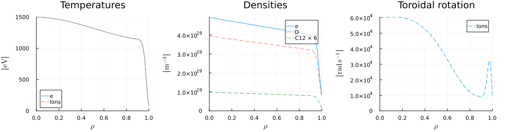
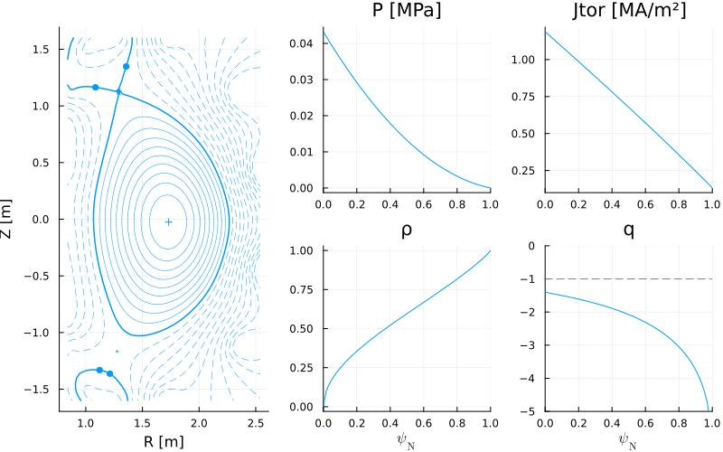
Run the stationary plasma
DIII-D already exists — no need for the power-plant machinery that ActorWholeFacility would drag in (sizing, blanket, balance of plant, costing...). ActorStationaryPlasma iterates equilibrium ⇄ transport ⇄ sources ⇄ current to a self-consistent stationary solution:
FUSE.ActorStationaryPlasma(dd, act);
# before vs after:
display(plot!(core_profiles_plot_init, dd.core_profiles, label=" after stationary plasma"))
display(plot!(eq_plot_init, dd.equilibrium, label=" after stationary plasma"))
# Transport fluxes versus source for the Electron energy, Ion energy and electron particle flux
display(plot(dd.core_transport; only=1))
display(plot(dd.core_transport; only=2))
display(plot(dd.core_transport; only=3))
# what is our beta_normal?[36m[1mactors[22m[39m[0m[1m: [22m[0mStationaryPlasma
[36m[1mactors[22m[39m[0m[1m: [22m[0m --------------- 1/5
[36m[1mactors[22m[39m[0m[1m: [22m[0m Sources
[36m[1mactors[22m[39m[0m[1m: [22m[0m SimpleEC
[36m[1mactors[22m[39m[0m[1m: [22m[0m SimpleNB
[36m[1mactors[22m[39m[0m[1m: [22m[0m NeutralFueling
[36m[1mactors[22m[39m[0m[1m: [22m[0m Pedestal
[36m[1mactors[22m[39m[0m[1m: [22m[0m EPED
[36m[1mactors[22m[39m[0m[1m: [22m[0m CoreTransport
[36m[1mactors[22m[39m[0m[1m: [22m[0m FluxMatcher
[36m[1mactors[22m[39m[0m[1m: [22m[0m FluxCalculator
[36m[1mactors[22m[39m[0m[1m: [22m[0m TGLF
[36m[1mactors[22m[39m[0m[1m: [22m[0m Neoclassical
[36m[1mactors[22m[39m[0m[1m: [22m[0m Current
[36m[1mactors[22m[39m[0m[1m: [22m[0m QED
[36m[1mactors[22m[39m[0m[1m: [22m[0m SawteethSource
[36m[1mactors[22m[39m[0m[1m: [22m[0m Equilibrium
[36m[1mactors[22m[39m[0m[1m: [22m[0m TEQUILA
[36m[1mactors[22m[39m[0m[1m: [22m[0m --------------- 1/5 @ 905.40%
[36m[1mactors[22m[39m[0m[1m: [22m[0m Sources
[36m[1mactors[22m[39m[0m[1m: [22m[0m SimpleEC
[36m[1mactors[22m[39m[0m[1m: [22m[0m SimpleNB
[36m[1mactors[22m[39m[0m[1m: [22m[0m NeutralFueling
[36m[1mactors[22m[39m[0m[1m: [22m[0m Pedestal
[36m[1mactors[22m[39m[0m[1m: [22m[0m EPED
[36m[1mactors[22m[39m[0m[1m: [22m[0m CoreTransport
[36m[1mactors[22m[39m[0m[1m: [22m[0m FluxMatcher
[36m[1mactors[22m[39m[0m[1m: [22m[0m FluxCalculator
[36m[1mactors[22m[39m[0m[1m: [22m[0m TGLF
[36m[1mactors[22m[39m[0m[1m: [22m[0m Neoclassical
[36m[1mactors[22m[39m[0m[1m: [22m[0m Current
[36m[1mactors[22m[39m[0m[1m: [22m[0m QED
[36m[1mactors[22m[39m[0m[1m: [22m[0m SawteethSource
[36m[1mactors[22m[39m[0m[1m: [22m[0m Equilibrium
[36m[1mactors[22m[39m[0m[1m: [22m[0m TEQUILA
[36m[1mactors[22m[39m[0m[1m: [22m[0m --------------- 2/5 @ 603.13%
[36m[1mactors[22m[39m[0m[1m: [22m[0m Sources
[36m[1mactors[22m[39m[0m[1m: [22m[0m SimpleEC
[36m[1mactors[22m[39m[0m[1m: [22m[0m SimpleNB
[36m[1mactors[22m[39m[0m[1m: [22m[0m NeutralFueling
[36m[1mactors[22m[39m[0m[1m: [22m[0m Pedestal
[36m[1mactors[22m[39m[0m[1m: [22m[0m EPED
[36m[1mactors[22m[39m[0m[1m: [22m[0m CoreTransport
[36m[1mactors[22m[39m[0m[1m: [22m[0m FluxMatcher
[36m[1mactors[22m[39m[0m[1m: [22m[0m FluxCalculator
[36m[1mactors[22m[39m[0m[1m: [22m[0m TGLF
[36m[1mactors[22m[39m[0m[1m: [22m[0m Neoclassical
[36m[1mactors[22m[39m[0m[1m: [22m[0m Current
[36m[1mactors[22m[39m[0m[1m: [22m[0m QED
[36m[1mactors[22m[39m[0m[1m: [22m[0m SawteethSource
[36m[1mactors[22m[39m[0m[1m: [22m[0m Equilibrium
[36m[1mactors[22m[39m[0m[1m: [22m[0m TEQUILA
[36m[1mactors[22m[39m[0m[1m: [22m[0m --------------- 3/5 @ 988.15%
[36m[1mactors[22m[39m[0m[1m: [22m[0m Sources
[36m[1mactors[22m[39m[0m[1m: [22m[0m SimpleEC
[36m[1mactors[22m[39m[0m[1m: [22m[0m SimpleNB
[36m[1mactors[22m[39m[0m[1m: [22m[0m NeutralFueling
[36m[1mactors[22m[39m[0m[1m: [22m[0m Pedestal
[36m[1mactors[22m[39m[0m[1m: [22m[0m EPED
[36m[1mactors[22m[39m[0m[1m: [22m[0m CoreTransport
[36m[1mactors[22m[39m[0m[1m: [22m[0m FluxMatcher
[36m[1mactors[22m[39m[0m[1m: [22m[0m FluxCalculator
[36m[1mactors[22m[39m[0m[1m: [22m[0m TGLF
[36m[1mactors[22m[39m[0m[1m: [22m[0m Neoclassical
[36m[1mactors[22m[39m[0m[1m: [22m[0m Current
[36m[1mactors[22m[39m[0m[1m: [22m[0m QED
[36m[1mactors[22m[39m[0m[1m: [22m[0m SawteethSource
[36m[1mactors[22m[39m[0m[1m: [22m[0m Equilibrium
[36m[1mactors[22m[39m[0m[1m: [22m[0m TEQUILA
[36m[1mactors[22m[39m[0m[1m: [22m[0m --------------- 4/5 @ 667.67%
[36m[1mactors[22m[39m[0m[1m: [22m[0m Sources
[36m[1mactors[22m[39m[0m[1m: [22m[0m SimpleEC
[36m[1mactors[22m[39m[0m[1m: [22m[0m SimpleNB
[36m[1mactors[22m[39m[0m[1m: [22m[0m NeutralFueling
[36m[1mactors[22m[39m[0m[1m: [22m[0m Pedestal
[36m[1mactors[22m[39m[0m[1m: [22m[0m EPED
[36m[1mactors[22m[39m[0m[1m: [22m[0m CoreTransport
[36m[1mactors[22m[39m[0m[1m: [22m[0m FluxMatcher
[36m[1mactors[22m[39m[0m[1m: [22m[0m FluxCalculator
[36m[1mactors[22m[39m[0m[1m: [22m[0m TGLF
[36m[1mactors[22m[39m[0m[1m: [22m[0m Neoclassical
[36m[1mactors[22m[39m[0m[1m: [22m[0m Current
[36m[1mactors[22m[39m[0m[1m: [22m[0m QED
[36m[1mactors[22m[39m[0m[1m: [22m[0m SawteethSource
[36m[1mactors[22m[39m[0m[1m: [22m[0m Equilibrium
[36m[1mactors[22m[39m[0m[1m: [22m[0m TEQUILA
[36m[1mactors[22m[39m[0m[1m: [22m[0m --------------- 5/5 @ 306.97%
[33m[1m┌ [22m[39m[33m[1mWarning: [22m[39mMax number of iterations (5) has been reached with convergence error of (1)[0.453, 0.302, 0.494, 0.334, 0.153](5) compared to threshold of 0.05
[33m[1m└ [22m[39m[90m@ FUSE ~/d3dsummerschool/FUSE/src/actors/compound/stationary_plasma_actor.jl:237[39m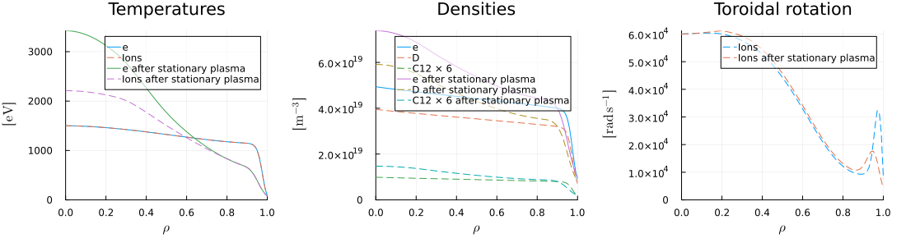
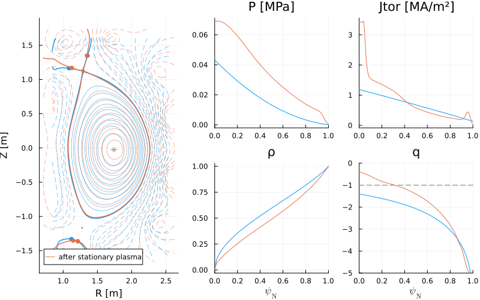
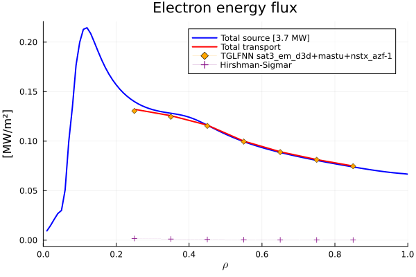
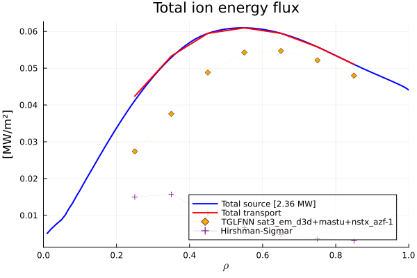
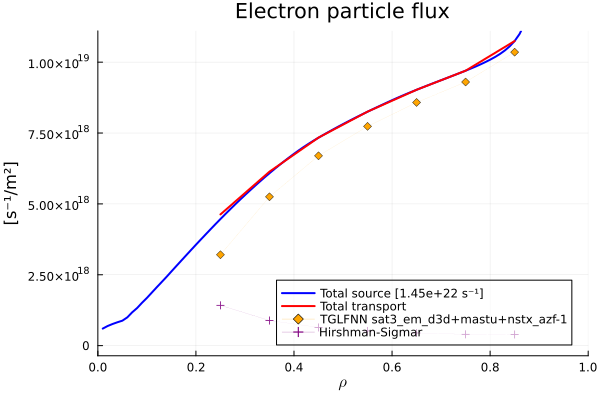
IMAS.extract(dd)[0m[1mGEOMETRY [22m[0m[1mEQUILIBRIUM [22m[0m[1mTEMPERATURES [22m
─────────────────────────────────── ─────────────────────────────────── ───────────────────────────────────
[34m[1mR0[22m[39m[0m → [0m1.67[0m [m] [34m[1mB0[22m[39m[0m → [0m-1.71[0m [T] [34m[1mTe0[22m[39m[0m → [0m3.42[0m [keV]
[34m[1ma[22m[39m[0m → [0m0.599[0m [m] [34m[1mip[22m[39m[0m → [0m0.984[0m [MA] [34m[1mTi0[22m[39m[0m → [0m2.21[0m [keV]
[34m[1m1/ϵ[22m[39m[0m → [0m2.78 [34m[1mq95[22m[39m[0m → [0m-4.79 [34m[1m<Te>[22m[39m[0m → [0m1.39[0m [keV]
[34m[1mκ[22m[39m[0m → [0m1.79 [34m[1m<Bpol>[22m[39m[0m → [0m0.226[0m [T] [34m[1m<Ti>[22m[39m[0m → [0m1.17[0m [keV]
[34m[1mδ[22m[39m[0m → [0m0.372 [34m[1mβpol_MHD[22m[39m[0m → [0m1.11 [34m[1mTe0/<Te>[22m[39m[0m → [0m2.46
[34m[1mζ[22m[39m[0m → [0m-0.121 [34m[1mβtor_MHD[22m[39m[0m → [0m0.0206 [34m[1mTi0/<Ti>[22m[39m[0m → [0m1.89
[34m[1mVolume[22m[39m[0m → [0m18.8[0m [m³] [34m[1mβn_MHD[22m[39m[0m → [0m2.13
[34m[1mSurface[22m[39m[0m → [0m53.7[0m [m²]
[0m[1mDENSITIES [22m[0m[1mPRESSURES [22m[0m[1mTRANSPORT [22m
─────────────────────────────────── ─────────────────────────────────── ───────────────────────────────────
[34m[1mne0[22m[39m[0m → [0m7.38e+19[0m [m⁻³] [34m[1mP0[22m[39m[0m → [0m0.0679[0m [MPa] [34m[1mτe[22m[39m[0m → [0m0.097[0m [s]
[34m[1mne_ped[22m[39m[0m → [0m3.67e+19[0m [m⁻³] [34m[1m<P>[22m[39m[0m → [0m0.0239[0m [MPa] [34m[1mτe_exp[22m[39m[0m → [0m0.095[0m [s]
[34m[1mne_line[22m[39m[0m → [0m5.66e+19[0m [m⁻³] [34m[1mP0/<P>[22m[39m[0m → [0m2.85 [34m[1mH98y2[22m[39m[0m → [0m1.08
[34m[1m<ne>[22m[39m[0m → [0m4.76e+19[0m [m⁻³] [34m[1mβn[22m[39m[0m → [0m2.14 [34m[1mH98y2_exp[22m[39m[0m → [0m1.08
[34m[1mne0/<ne>[22m[39m[0m → [0m1.55 [34m[1mβn_th[22m[39m[0m → [0m1.82 [34m[1mHds03[22m[39m[0m → [0m1.08
[34m[1mfGW[22m[39m[0m → [0m0.648 [34m[1mHds03_exp[22m[39m[0m → [0m1.07
[34m[1mzeff_ped[22m[39m[0m → [0m2 [34m[1mτα_thermalization[22m[39m[0m → [0m0.176[0m [s]
[34m[1m<zeff>[22m[39m[0m → [0m1.99 [34m[1mτα_slowing_down[22m[39m[0m → [0m0.105[0m [s]
[34m[1mimpurities[22m[39m[0m → [0mD C12
[0m[1mSOURCES [22m[0m[1mEXHAUST [22m[0m[1mCURRENTS [22m
─────────────────────────────────── ─────────────────────────────────── ───────────────────────────────────
[34m[1mPec[22m[39m[0m → [0m3[0m [MW] [34m[1mPsol[22m[39m[0m → [0m5.95[0m [MW] [34m[1mip_bs_aux_ohm[22m[39m[0m → [0m0.992[0m [MA]
[34m[1mrho0_ec[22m[39m[0m → [0m0.08[0m [MW] [34m[1mPLH[22m[39m[0m → [0m2.11[0m [MW] [34m[1mip_ni[22m[39m[0m → [0m0.479[0m [MA]
[34m[1mPnbi[22m[39m[0m → [0m3[0m [MW] [34m[1mPLH_FUSE[22m[39m[0m → [0m4.19[0m [MW] [34m[1mip_bs[22m[39m[0m → [0m0.321[0m [MA]
[34m[1mEnbi1[22m[39m[0m → [0m0.08[0m [MeV] [34m[1mBpol_omp[22m[39m[0m → [0m0.336[0m [T] [34m[1mip_aux[22m[39m[0m → [0m0.158[0m [MA]
[34m[1mPic[22m[39m[0m → [31mNaN[39m[0m [MW] [34m[1mλq[22m[39m[0m → [0m3.15[0m [mm] [34m[1mip_ohm[22m[39m[0m → [0m0.513[0m [MA]
[34m[1mPlh[22m[39m[0m → [31mNaN[39m[0m [MW] [34m[1mqpol[22m[39m[0m → [0m133[0m [MW/m²] [34m[1mejima[22m[39m[0m → [0m0.4
[34m[1mPaux_tot[22m[39m[0m → [0m6[0m [MW] [34m[1mqpar[22m[39m[0m → [0m-514[0m [MW/m²] [34m[1mflattop[22m[39m[0m → [31mNaN[39m[0m [Hours]
[34m[1mPα[22m[39m[0m → [0m1.74e-05[0m [MW] [34m[1mP/R0[22m[39m[0m → [0m3.57[0m [MW/m]
[34m[1mPohm[22m[39m[0m → [0m0.139[0m [MW] [34m[1mPB/R0[22m[39m[0m → [0m-6.1[0m [MW T/m]
[34m[1mPheat[22m[39m[0m → [0m6.14[0m [MW] [34m[1mPBp/R0[22m[39m[0m → [0m0.807[0m [MW T/m]
[34m[1mPrad_tot[22m[39m[0m → [0m-0.125[0m [MW] [34m[1mPBϵ/R0q95[22m[39m[0m → [0m0.457[0m [MW T/m]
[34m[1mneutrons_peak[22m[39m[0m → [31mNaN[39m[0m [MW/m²]
[0m[1mBOP [22m[0m[1mBUILD [22m[0m[1mCOSTING [22m
─────────────────────────────────── ─────────────────────────────────── ───────────────────────────────────
[34m[1mPfusion[22m[39m[0m → [0m0[0m [MW] [34m[1mPF_material[22m[39m[0m → [0mcopper [34m[1mcapital_cost[22m[39m[0m → [31mNaN[39m[0m [$B]
[34m[1mQfusion[22m[39m[0m → [0m0 [34m[1mTF_material[22m[39m[0m → [0mcopper [34m[1mlevelized_CoE[22m[39m[0m → [31mNaN[39m[0m [$/kWh]
[34m[1mthermal_cycle_type[22m[39m[0m → [0mrankine [34m[1mOH_material[22m[39m[0m → [0mcopper [34m[1mTF_of_total[22m[39m[0m → [31mNaN[39m[0m [%]
[34m[1mthermal_efficiency_plant[22m[39m[0m → [31mNaN[39m[0m [%] [34m[1mTF_max_b[22m[39m[0m → [31mNaN[39m[0m [T] [34m[1mBOP_of_total[22m[39m[0m → [31mNaN[39m[0m [%]
[34m[1mthermal_efficiency_cycle[22m[39m[0m → [31mNaN[39m[0m [%] [34m[1mOH_max_b[22m[39m[0m → [31mNaN[39m[0m [T] [34m[1mblanket_of_total[22m[39m[0m → [31mNaN[39m[0m [%]
[34m[1mpower_electric_generated[22m[39m[0m → [31mNaN[39m[0m [MW] [34m[1mTF_j_margin[22m[39m[0m → [31mNaN[39m [34m[1mcryostat_of_total[22m[39m[0m → [31mNaN[39m[0m [%]
[34m[1mPelectric_net[22m[39m[0m → [31mNaN[39m[0m [MW] [34m[1mOH_j_margin[22m[39m[0m → [31mNaN[39m
[34m[1mQplant[22m[39m[0m → [31mNaN[39m [34m[1mTF_stress_margin[22m[39m[0m → [31mNaN[39m
[34m[1mTBR[22m[39m[0m → [31mNaN[39m [34m[1mOH_stress_margin[22m[39m[0m → [31mNaN[39mOperational limits (the stability NN!)
Let's see if our idealized run stays within the no-wall limit with TroyonBetaNN. For each toroidal mode number n=1,2,3 it predicts the no-wall βₙ limit for THIS equilibrium shape and profiles. fraction = βₙ / βₙ_limit, so fraction < 1 means stable.
TroyonBetaNN is trained by CHEASE and MarsF [Y.Q. Liu, et al., PPCF (2020)]
act.ActorPlasmaLimits.models = [:beta_troyon_nn]
act.ActorPlasmaLimits.verbose = true
FUSE.ActorPlasmaLimits(dd, act);
[36m[1mactors[22m[39m[0m[1m: [22m[0mPlasmaLimits
[36m[1mactors[22m[39m[0m[1m: [22m[0m TroyonBetaNN
act.ActorPlasmaLimits.models = [:beta_troyon_nn]
Some stability rules satisfy their limit threshold:
64% of: βn < BetaTroyonNN n=1
44% of: βn < BetaTroyonNN n=2
48% of: βn < BetaTroyonNN n=3Did the transport solver converge?
display(plot(dd.core_transport))
@show dd.transport_solver_numerics.convergence.time_step.data[1]
# This is the field we'll use as a constraint in the optimization to
# automatically reject unconverged runs:
# Save for later comparison:
file_name = joinpath(@__DIR__, "..", "runs", "d3d_single_run.json")
IMAS.imas2json(dd, file_name);
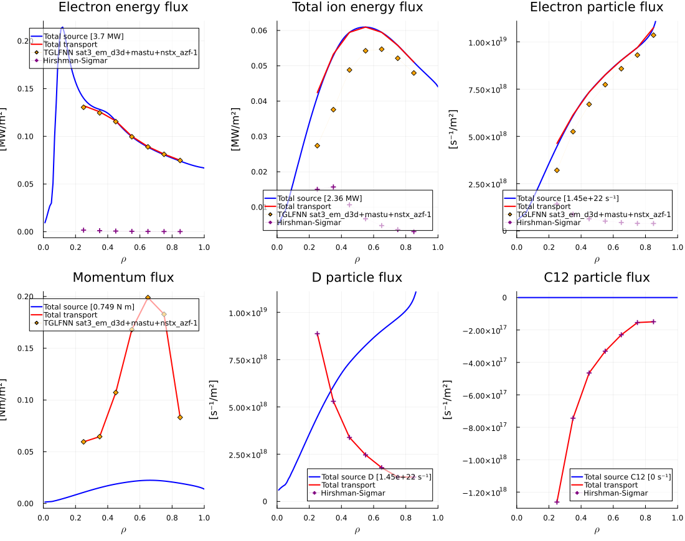
dd.transport_solver_numerics.convergence.time_step.data[1] = 4.810556065029565e-5An idealized DIII-D CMOOP
Constrained Multi-Objective Optimization: take the single run from 01_d3d_single_run.jl, declare some ini parameters as actuators (with ↔ ranges), pick objectives and constraints, and let a genetic algorithm (SPEA2) explore the operational space.
Run with: julia –project=../FUSE ...or, with a sysimage (makesysimage.jl — currently Linux only, see README): julia -J ../fused3d.so –project=../FUSE The CMOOP workers inherit the sysimage automatically (Distributed spawns them with the master's julia command) — fast startup, shared image memory.
using FUSE
import IMAS
using Plots
Start from the same idealized DIII-D
ini, act = FUSE.case_parameters(:D3D, :default);
# We're setting up act the same as before:
act.ActorPedestal.model = :EPED
act.ActorFluxMatcher.evolve_pedestal = false
# This is the TGLF NN that we use:
act.ActorTGLF.tglfnn_model = "sat3_em_d3d+mastu+nstx_azf-1"
act.ActorPlasmaLimits.models = [:beta_troyon_nn]
act.ActorEquilibrium.model = :TEQUILA
:TEQUILATurn ini parameters into actuators
value ↔ [lower, upper] declares an optimization range; value ↔ (choice1, choice2) declares a categorical choice. Anything with a ↔ becomes a gene of the optimizer — everything else stays fixed.
# plasma current
ini.equilibrium.ip = ini.equilibrium.ip ↔ [0.6E6, 1.5E6]
# heating & current drive: the three beamlines and the gyrotrons
ini.nb_unit[1].power_launched = ini.nb_unit[1].power_launched ↔ [0.1E6, 3.3E6] # co
ini.nb_unit[2].power_launched = ini.nb_unit[2].power_launched ↔ [0.1E6, 3.3E6] # counter
ini.nb_unit[3].power_launched = ini.nb_unit[3].power_launched ↔ [0.1E6, 3.3E6] # off-axis
ini.ec_launcher[1].power_launched = ini.ec_launcher[1].power_launched ↔ [0.1E6, 4.5E6]
# EC deposition location: aiming is really an act parameter
# (act.ActorSimpleEC.actuator[].rho_0) and only ini parameters can carry ↔
# ranges — so the gene rides on ini.ec_launcher[].rho_0 and our custom
# workflow (cmoop_definitions.jl) maps it onto act before each run
ini.ec_launcher[1].rho_0 = 0.4 ↔ [0.1, 0.8]
# density and impurities — absolute pedestal density (not Greenwald fraction),
# kept low to stay clear of the EC cutoff
ini.core_profiles.ne_setting = :ne_ped
ini.core_profiles.ne_value = 4.0e19 ↔ [3.5e19, 4.5e19] # pedestal density [m⁻³]
ini.core_profiles.zeff = ini.core_profiles.zeff ↔ [1.5, 3.5]
ini.core_profiles.impurity = ini.core_profiles.impurity ↔ (:C, :Ne) # categorical!
# more ideas:
# ini.core_profiles.ne_sep_to_ped_ratio = ini.core_profiles.ne_sep_to_ped_ratio ↔ [0.15, 0.5]
SimulationParameters.OptParameterChoice{Symbol}(:C, missing, missing, 1, [:C, :Ne])Requirements (used by some constraint functions)
ini.requirements.lh_power_threshold_fraction = 1.0 # stay in H-mode
1.0Objectives and constraints
The custom functions live in cmoopdefinitions.jl — open it! It defines: maxprad, maxβn, maxfni and the stabletroyonnn constraint.
# (these definitions also live in cmoop_definitions.jl — that's the file the
# CMOOP workers load, so keep the two in sync if you edit them here)
# Custom objective & constraint functions for the DIII-D CMOOP
#
# The stock libraries (IMAS.ObjectiveFunctionsLibrary / ConstraintFunctionsLibrary)
# are just collections of functions of `dd` — none of them talk about radiation
# or non-inductive fraction, so we define our own. Constructing an
# ObjectiveFunction/ConstraintFunction registers it in the library.
#
# NOTE: this file is `include`d on the master AND on every worker
# (via `@everywhere`) so that the workers can also evaluate these
# functions when building the results database.
import FUSE
import IMAS
# What the optimizer runs for every individual.
# DIII-D already exists, so no ActorWholeFacility (sizing, blanket, costing...):
# just the self-consistent stationary plasma + the operational limit models.
function d3d_stationary_workflow(ini::FUSE.ParametersAllInits, act::FUSE.ParametersAllActors)
# act parameters are not scanned for ↔ optimization ranges — so the EC
# aiming gene rides on ini (ini.ec_launcher[].rho_0) and we map it onto
# the act-side actuator here, before running the actors
for k in 1:min(length(ini.ec_launcher), length(act.ActorSimpleEC.actuator))
if !ismissing(ini.ec_launcher[k], :rho_0)
act.ActorSimpleEC.actuator[k].rho_0 = ini.ec_launcher[k].rho_0
end
end
dd = IMAS.dd()
FUSE.init(dd, ini, act)
FUSE.ActorEquilibrium(dd,act;ip_from=:pulse_schedule);
# the input ODS carried in ini.general.dd was only needed by init —
# drop it so the per-case ini saved in the database is small and serializable
ini.general.dd = missing
FUSE.ActorStationaryPlasma(dd, act)
FUSE.ActorPlasmaLimits(dd, act)
return dd
end
IMAS.update_ObjectiveFunctionsLibrary!()
IMAS.update_ConstraintFunctionsLibrary!()
# maximize radiated power (radiative divertor operation)
# NB: IMAS convention — radiation sources are sinks, radiation_losses() < 0,
# so the radiated power in positive MW is -radiation_losses()
IMAS.ObjectiveFunction(:max_prad, "MW",
dd -> -IMAS.radiation_losses(dd.core_sources) / 1E6,
Inf)
# maximize normalized beta (performance)
IMAS.ObjectiveFunction(:max_βn, "-",
dd -> dd.equilibrium.time_slice[].global_quantities.beta_normal,
Inf)
# maximize the non-inductive current fraction (steady-state operation)
IMAS.ObjectiveFunction(:max_fni, "-",
dd -> IMAS.@ddtime(dd.summary.global_quantities.current_non_inductive.value) /
dd.equilibrium.time_slice[].global_quantities.ip,
Inf)
# constraint: stay below the TroyonBetaNN no-wall βₙ limit (n=1,2,3).
# The stability NN runs in ActorPlasmaLimits (part of our workflow below) and
# stores fraction = βₙ / βₙ_limit in dd.limits — we require the worst mode < 1
IMAS.ConstraintFunction(:stable_troyon_nn, "-",
dd -> maximum([IMAS.@ddtime(model.fraction) for model in dd.limits.model if startswith(model.identifier.name, "BetaTroyonNN")]; init=0.0),
<, 1.0)
[34m[1mstable_troyon_nn[22m[39m < 1.0 [-]OFL = deepcopy(IMAS.ObjectiveFunctionsLibrary)
CFL = deepcopy(IMAS.ConstraintFunctionsLibrary)
# pick your fight — 2 objectives make a nice 2D Pareto front to look at
objective_functions = [OFL[:max_βn], OFL[:max_prad]]
# ... or: [OFL[:max_βn], OFL[:max_fni]], [OFL[:max_prad], OFL[:max_fni]], ...
constraint_functions = [
CFL[:max_transport_error], # transport solver must have converged
CFL[:min_lh_power_threshold_fraction], # enough power over the separatrix to stay in H-mode
CFL[:stable_troyon_nn], # below the NN no-wall beta limit
]
println("== ACTUATORS ==")
display(FUSE.SimulationParameters.opt_parameters(ini))
println("\n== OBJECTIVE FUNCTIONS ==")
display(objective_functions)
println("\n== CONSTRAINT FUNCTIONS ==")
display(constraint_functions)
== ACTUATORS ==
9-element Vector{SimulationParameters.AbstractParameter}:
[34m[1mini.equilibrium.ip[22m[39m
[0m[1m- type: [22m[0mFloat64
[0m[1m- units: [22m[0mA
[0m[1m- description: [22m[0mPlasma current (toroidal component). Positive sign means anti-clockwise when viewed from above.
[0m[1m- value: [22m[0m1.08374265e6
[0m[1m- base: [22m[0m1.08374265e6
[0m[1m- default: [22m[0mmissing
[0m[1m- opt: [22m[0mSimulationParameters.OptParameterRange{Float64}(1.08374265e6, 600000.0, 1.5e6, 1, missing)
[0m[1m- check: [22m[0mnothing
[31m[1mini.core_profiles.ne_value[22m[39m
[0m[1m- type: [22m[0mFloat64
[0m[1m- units: [22m[0m-
[0m[1m- description: [22m[0mValue based on setup method
[0m[1m- value: [22m[0m4.0e19
[0m[1m- base: [22m[0m0.5625
[0m[1m- default: [22m[0mmissing
[0m[1m- opt: [22m[0mSimulationParameters.OptParameterRange{Float64}(4.0e19, 3.5e19, 4.5e19, 1, missing)
[0m[1m- check: [22m[0m#284
[34m[1mini.core_profiles.zeff[22m[39m
[0m[1m- type: [22m[0mFloat64
[0m[1m- units: [22m[0m-
[0m[1m- description: [22m[0mEffective ion charge
[0m[1m- value: [22m[0m2.0
[0m[1m- base: [22m[0m2.0
[0m[1m- default: [22m[0mmissing
[0m[1m- opt: [22m[0mSimulationParameters.OptParameterRange{Float64}(2.0, 1.5, 3.5, 1, missing)
[0m[1m- check: [22m[0m#298
[34m[1mini.core_profiles.impurity[22m[39m
[0m[1m- type: [22m[0mSymbol
[0m[1m- units: [22m[0m-
[0m[1m- description: [22m[0mSeeding impurity ion species (fraction calculated to match zeff given wall_impurity)
[0m[1m- value: [22m[0mC
[0m[1m- base: [22m[0mC
[0m[1m- default: [22m[0mmissing
[0m[1m- opt: [22m[0mSimulationParameters.OptParameterChoice{Symbol}(:C, missing, missing, 1, [:C, :Ne])
[0m[1m- check: [22m[0mnothing
[34m[1mini.nb_unit[1].power_launched[22m[39m
[0m[1m- type: [22m[0mFloat64
[0m[1m- units: [22m[0mW
[0m[1m- description: [22m[0mBeam power
[0m[1m- value: [22m[0m1.0e6
[0m[1m- base: [22m[0m1.0e6
[0m[1m- default: [22m[0mmissing
[0m[1m- opt: [22m[0mSimulationParameters.OptParameterRange{Float64}(1.0e6, 100000.0, 3.3e6, 1, missing)
[0m[1m- check: [22m[0m#370
[34m[1mini.nb_unit[2].power_launched[22m[39m
[0m[1m- type: [22m[0mFloat64
[0m[1m- units: [22m[0mW
[0m[1m- description: [22m[0mBeam power
[0m[1m- value: [22m[0m1.0e6
[0m[1m- base: [22m[0m1.0e6
[0m[1m- default: [22m[0mmissing
[0m[1m- opt: [22m[0mSimulationParameters.OptParameterRange{Float64}(1.0e6, 100000.0, 3.3e6, 1, missing)
[0m[1m- check: [22m[0m#370
[34m[1mini.nb_unit[3].power_launched[22m[39m
[0m[1m- type: [22m[0mFloat64
[0m[1m- units: [22m[0mW
[0m[1m- description: [22m[0mBeam power
[0m[1m- value: [22m[0m1.0e6
[0m[1m- base: [22m[0m1.0e6
[0m[1m- default: [22m[0mmissing
[0m[1m- opt: [22m[0mSimulationParameters.OptParameterRange{Float64}(1.0e6, 100000.0, 3.3e6, 1, missing)
[0m[1m- check: [22m[0m#370
[34m[1mini.ec_launcher[1].power_launched[22m[39m
[0m[1m- type: [22m[0mFloat64
[0m[1m- units: [22m[0mW
[0m[1m- description: [22m[0mEC launched power
[0m[1m- value: [22m[0m3.0e6
[0m[1m- base: [22m[0m3.0e6
[0m[1m- default: [22m[0mmissing
[0m[1m- opt: [22m[0mSimulationParameters.OptParameterRange{Float64}(3.0e6, 100000.0, 4.5e6, 1, missing)
[0m[1m- check: [22m[0m#416
[31m[1mini.ec_launcher[1].rho_0[22m[39m
[0m[1m- type: [22m[0mFloat64
[0m[1m- units: [22m[0m-
[0m[1m- description: [22m[0mDesired radial location of the EC deposition (used by ActorSimpleEC)
[0m[1m- value: [22m[0m0.4
[0m[1m- base: [22m[0mmissing
[0m[1m- default: [22m[0mmissing
[0m[1m- opt: [22m[0mSimulationParameters.OptParameterRange{Float64}(0.4, 0.1, 0.8, 1, missing)
[0m[1m- check: [22m[0m#418
== OBJECTIVE FUNCTIONS ==
2-element Vector{IMAS.ObjectiveFunction}:
[34m[1mmax_βn[22m[39m → Inf [-]
[34m[1mmax_prad[22m[39m → Inf [MW]
== CONSTRAINT FUNCTIONS ==
3-element Vector{IMAS.ConstraintFunction}:
[34m[1mmax_transport_error[22m[39m < 0.1 []
[34m[1mmin_lh_power_threshold_fraction[22m[39m > 1.0 [%]
[34m[1mstable_troyon_nn[22m[39m < 1.0 [-]Setup the study
sty is to a study what act is to an actor
sty = FUSE.study_parameters(:MultiObjectiveOptimizer);
sty.server = "localhost" # or saga / omega / nersc ...
sty.n_workers = 4 # ~2-3 GB RAM each — don't oversubscribe your laptop
sty.save_folder = joinpath(@__DIR__, "..", "runs", "d3d_cmoop__summerschool")
mkpath(sty.save_folder)
# note: the default sty.file_save_mode = :safe_write requires an EMPTY folder —
# when re-running, point to a fresh folder (or set sty.file_save_mode = :append)
# workshop scale — enough to see the optimizer move (~15 min on a laptop).
# For a real study: population_size ≈ 300, number_of_generations ≈ 100, on a cluster.
sty.population_size = 8 # must be even
sty.number_of_generations = 3
3Run it (commented out for the demo)
# study = FUSE.StudyMultiObjectiveOptimizer(sty, ini, act, constraint_functions, objective_functions);
# # what each individual runs: init → ActorStationaryPlasma → ActorPlasmaLimits
# # (defined in cmoop_definitions.jl; the default would be ActorWholeFacility)
# study.workflow = d3d_stationary_workflow
# # distributed computing: code must exist on every worker, not just here
# using Distributed
# @everywhere import FUSE
# @everywhere import IMAS
# @everywhere include($(joinpath(@__DIR__, "cmoop_definitions.jl")))
# FUSE.run(study);
Analyzing the DIII-D CMOOP results
The study left us a database: every individual the genetic algorithm tried is one row in extract.csv (plus the full dd's in database.h5). This is the same kind of database that powers fuseexplorer.com — there it's ~10⁵ power-plant runs from NERSC, here it's our workshop-sized DIII-D scan.
Run with: julia –project=../FUSE
using CSV
using DataFrames
using Statistics
using Plots
import FUSE
import IMAS
folder = joinpath(@__DIR__, "..", "runs", "d3d_cmoop_summerschool")
df = CSV.read(joinpath(folder, "extract.csv"), DataFrame)
# figures get saved alongside the study results
figdir = joinpath(folder, "figures")
mkpath(figdir)
println("total runs: ", nrow(df))
println("successful: ", sum(df.status .== "success"))
println("median time: ", round(median(skipmissing(df.elapsed_time)); digits=1), " s / run")
total runs: 40
successful: 33
median time: 6.2 s / runFeasibility
Constraint columns hold the constraint "cost": 0.0 = satisfied.
constraints = [:max_transport_error, :min_lh_power_threshold_fraction, :stable_troyon_nn]
ok = df.status .== "success"
for c in constraints
ok .&= coalesce.(df[!, c] .== 0.0, false)
println(rpad(c, 35), " pass: ", sum(coalesce.(df[!, c] .== 0.0, false)), "/", nrow(df))
end
feasible = df[ok, :]
infeasible = df[.!ok, :]
println("feasible: ", nrow(feasible), "/", nrow(df))
max_transport_error pass: 32/40
min_lh_power_threshold_fraction pass: 31/40
stable_troyon_nn pass: 30/40
feasible: 28/40The objective space
Feasible points colored by generation — watch the optimizer walk towards the Pareto front:
# NB: extract's Prad_tot follows the IMAS sink convention (negative) —
# flip the sign to plot radiated power in positive MW
p = scatter(infeasible.βn, -infeasible.Prad_tot;
color=:lightgray, label="infeasible", xlabel="βₙ", ylabel="Prad [MW]")
scatter!(p, feasible.βn, -feasible.Prad_tot;
zcolor=feasible.gen, colorbar_title="generation", label="feasible")
display(p)
savefig(p, joinpath(figdir, "objective_space_by_generation.png"))
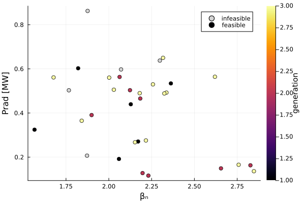
"/Users/tims/d3dsummerschool/runs/d3d_cmoop_summerschool/figures/objective_space_by_generation.png"The Pareto front
FUSE.pareto_front expects "smaller is better", so negate what we maximize:
# maximize βₙ and maximize radiated power (= minimize the negative Prad_tot)
solutions = [[-row.βn, row.Prad_tot] for row in eachrow(feasible)]
ipareto = FUSE.pareto_front(solutions)
front = sort(feasible[ipareto, :], :βn)
p = scatter(feasible.βn, -feasible.Prad_tot; color=:lightgray, label="feasible", xlabel="βₙ", ylabel="Prad [MW]")
plot!(p, front.βn, -front.Prad_tot; marker=:circle, lw=2, color=:crimson, label="Pareto front")
display(p)
savefig(p, joinpath(figdir, "pareto_front.png"))
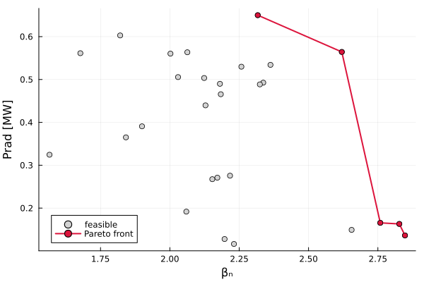
"/Users/tims/d3dsummerschool/runs/d3d_cmoop_summerschool/figures/pareto_front.png"How did it get there? Look at the actuators
Color the objective space by the knobs — this is where discoveries happen:
# colorbars clamped to the ranges we gave the optimizer
knob_ranges = [
:Paux_tot => (0.4, 14.4), # sum of the power gene bounds [MW]
:ip => (0.6, 1.5), # [MA]
:zeff_ped => (1.5, 3.5),
]
for (knob, cl) in knob_ranges
if String(knob) in names(feasible)
local p = scatter(feasible.βn, -feasible.Prad_tot;
zcolor=feasible[!, knob], clims=cl, colorbar_title=string(knob),
xlabel="βₙ", ylabel="Prad [MW]", label="")
display(p)
savefig(p, joinpath(figdir, "objective_space_by_$(knob).png"))
end
end
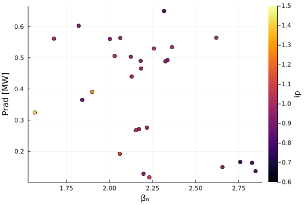
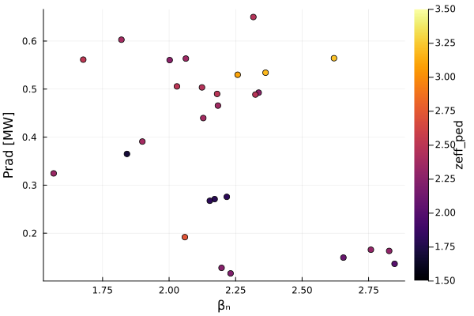
Which knobs got us here? Recover the genes
The colorings above used outputs that mirror knobs. But the actual gene values (e.g. the EC aiming ρ₀ — invisible in the outputs) live in each case's stored ini. The database keeps everything: dd, ini, act, logs.
db = FUSE.load_study_database(joinpath(folder, "database.h5"), String.(feasible.gparent); pattern=r"ini")
rho0 = [item.ini.ec_launcher[1].rho_0 for item in db.items]
p = scatter(feasible.βn, -feasible.Prad_tot;
zcolor=rho0, clims=(0.1, 0.8), colorbar_title="EC deposition ρ₀",
xlabel="βₙ", ylabel="Prad [MW]", label="")
display(p)
savefig(p, joinpath(figdir, "objective_space_by_ec_rho0.png"))
# ...and the categorical gene: which impurity did the optimizer pick where?
imp = [string(item.ini.core_profiles.impurity) for item in db.items]
p = plot(; xlabel="βₙ", ylabel="Prad [MW]")
for (species, color) in (("C", :royalblue), ("Ne", :darkorange))
sel = imp .== species
scatter!(p, feasible.βn[sel], -feasible.Prad_tot[sel]; color, label="impurity: $species")
end
display(p)
savefig(p, joinpath(figdir, "objective_space_by_impurity.png"))
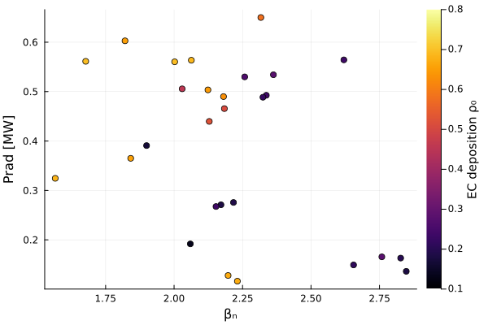
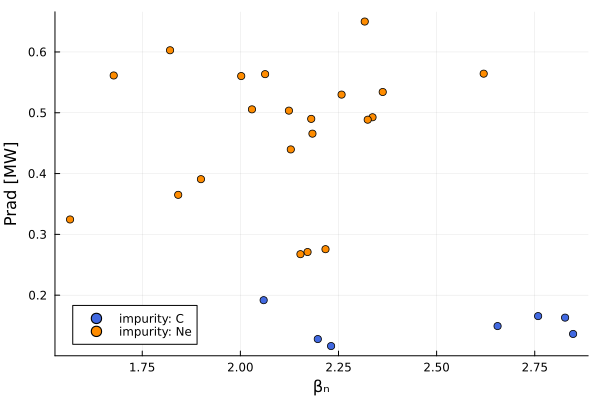
"/Users/tims/d3dsummerschool/runs/d3d_cmoop_summerschool/figures/objective_space_by_impurity.png"Deep-dive a single individual
Pick a Pareto-front point and reload the entire simulation:
best = front[end, :] # highest βₙ on the front
println("best individual: ", best.gparent)
db1 = FUSE.load_study_database(joinpath(folder, "database.h5"), String(best.gparent))
dd_best = db1.items[1].dd
p = plot(dd_best.equilibrium)
display(p)
savefig(p, joinpath(figdir, "best_equilibrium.png"))
p = plot(dd_best.core_profiles)
display(p)
savefig(p, joinpath(figdir, "best_core_profiles.png"))
p = plot(dd_best.core_sources)
display(p)
savefig(p, joinpath(figdir, "best_core_sources.png"))
IMAS.extract(dd_best)
best individual: /gen3/case13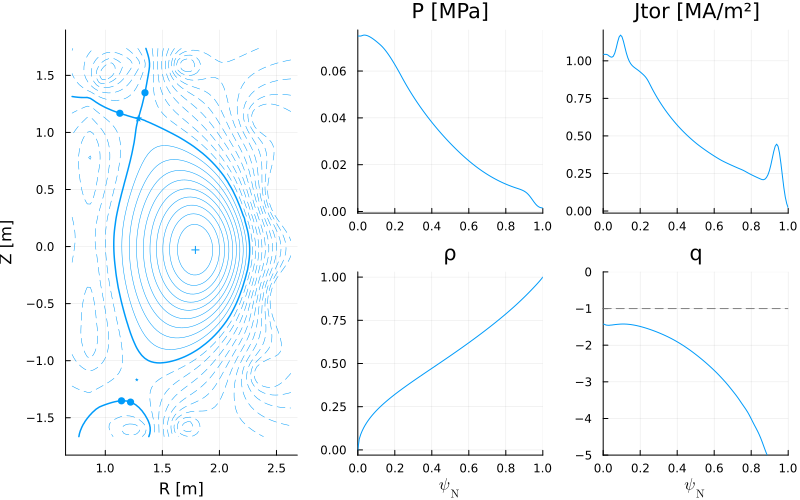
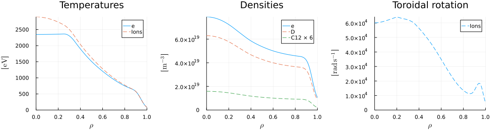
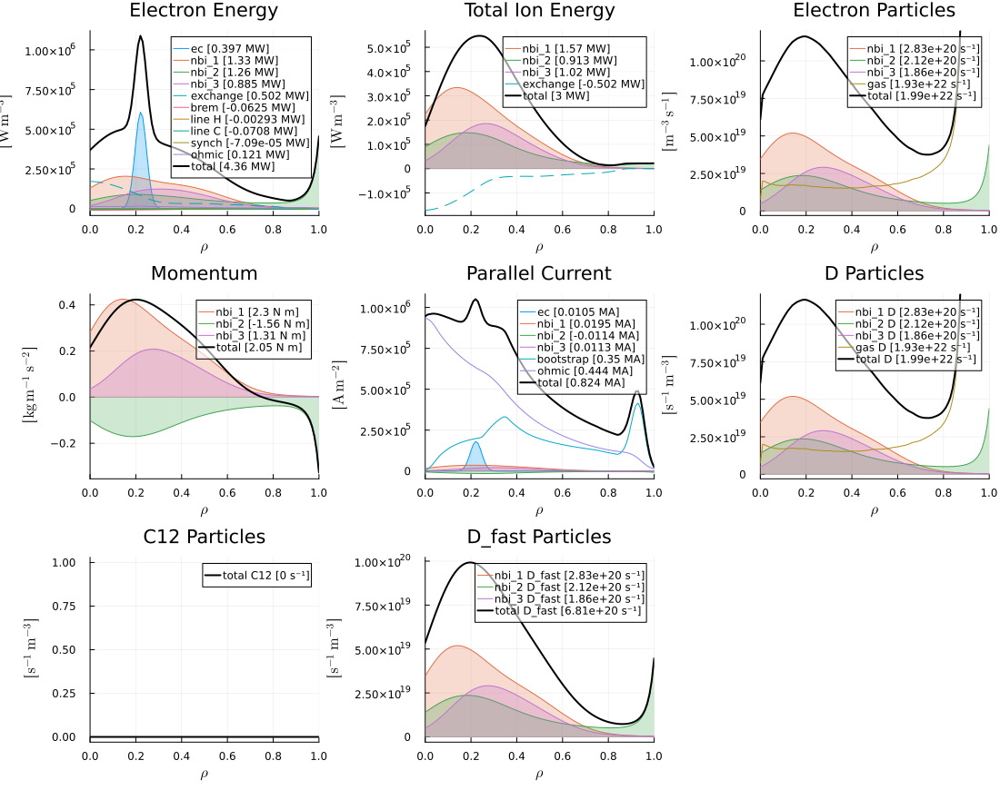
[0m[1mGEOMETRY [22m[0m[1mEQUILIBRIUM [22m[0m[1mTEMPERATURES [22m
─────────────────────────────────── ─────────────────────────────────── ───────────────────────────────────
[34m[1mR0[22m[39m[0m → [0m1.67[0m [m] [34m[1mB0[22m[39m[0m → [0m-1.71[0m [T] [34m[1mTe0[22m[39m[0m → [0m2.35[0m [keV]
[34m[1ma[22m[39m[0m → [0m0.599[0m [m] [34m[1mip[22m[39m[0m → [0m0.836[0m [MA] [34m[1mTi0[22m[39m[0m → [0m2.89[0m [keV]
[34m[1m1/ϵ[22m[39m[0m → [0m2.78 [34m[1mq95[22m[39m[0m → [0m-5.95 [34m[1m<Te>[22m[39m[0m → [0m1.19[0m [keV]
[34m[1mκ[22m[39m[0m → [0m1.79 [34m[1m<Bpol>[22m[39m[0m → [0m0.192[0m [T] [34m[1m<Ti>[22m[39m[0m → [0m1.28[0m [keV]
[34m[1mδ[22m[39m[0m → [0m0.372 [34m[1mβpol_MHD[22m[39m[0m → [0m1.74 [34m[1mTe0/<Te>[22m[39m[0m → [0m1.97
[34m[1mζ[22m[39m[0m → [0m-0.121 [34m[1mβtor_MHD[22m[39m[0m → [0m0.0234 [34m[1mTi0/<Ti>[22m[39m[0m → [0m2.25
[34m[1mVolume[22m[39m[0m → [0m18.9[0m [m³] [34m[1mβn_MHD[22m[39m[0m → [0m2.84
[34m[1mSurface[22m[39m[0m → [0m53.7[0m [m²]
[0m[1mDENSITIES [22m[0m[1mPRESSURES [22m[0m[1mTRANSPORT [22m
─────────────────────────────────── ─────────────────────────────────── ───────────────────────────────────
[34m[1mne0[22m[39m[0m → [0m7.88e+19[0m [m⁻³] [34m[1mP0[22m[39m[0m → [0m0.07[0m [MPa] [34m[1mτe[22m[39m[0m → [0m0.0761[0m [s]
[34m[1mne_ped[22m[39m[0m → [0m4.09e+19[0m [m⁻³] [34m[1m<P>[22m[39m[0m → [0m0.027[0m [MPa] [34m[1mτe_exp[22m[39m[0m → [0m0.0747[0m [s]
[34m[1mne_line[22m[39m[0m → [0m5.8e+19[0m [m⁻³] [34m[1mP0/<P>[22m[39m[0m → [0m2.59 [34m[1mH98y2[22m[39m[0m → [0m1.13
[34m[1m<ne>[22m[39m[0m → [0m4.93e+19[0m [m⁻³] [34m[1mβn[22m[39m[0m → [0m2.85 [34m[1mH98y2_exp[22m[39m[0m → [0m1.13
[34m[1mne0/<ne>[22m[39m[0m → [0m1.6 [34m[1mβn_th[22m[39m[0m → [0m2.08 [34m[1mHds03[22m[39m[0m → [0m1.08
[34m[1mfGW[22m[39m[0m → [0m0.781 [34m[1mHds03_exp[22m[39m[0m → [0m1.07
[34m[1mzeff_ped[22m[39m[0m → [0m2 [34m[1mτα_thermalization[22m[39m[0m → [0m0.107[0m [s]
[34m[1m<zeff>[22m[39m[0m → [0m2 [34m[1mτα_slowing_down[22m[39m[0m → [0m0.0575[0m [s]
[34m[1mimpurities[22m[39m[0m → [0mD C12
[0m[1mSOURCES [22m[0m[1mEXHAUST [22m[0m[1mCURRENTS [22m
─────────────────────────────────── ─────────────────────────────────── ───────────────────────────────────
[34m[1mPec[22m[39m[0m → [0m0.397[0m [MW] [34m[1mPsol[22m[39m[0m → [0m7.36[0m [MW] [34m[1mip_bs_aux_ohm[22m[39m[0m → [0m0.846[0m [MA]
[34m[1mrho0_ec[22m[39m[0m → [0m0.22[0m [MW] [34m[1mPLH[22m[39m[0m → [0m2.15[0m [MW] [34m[1mip_ni[22m[39m[0m → [0m0.396[0m [MA]
[34m[1mPnbi[22m[39m[0m → [0m7.12[0m [MW] [34m[1mPLH_FUSE[22m[39m[0m → [0m4.26[0m [MW] [34m[1mip_bs[22m[39m[0m → [0m0.353[0m [MA]
[34m[1mEnbi1[22m[39m[0m → [0m0.08[0m [MeV] [34m[1mBpol_omp[22m[39m[0m → [0m0.301[0m [T] [34m[1mip_aux[22m[39m[0m → [0m0.0425[0m [MA]
[34m[1mPic[22m[39m[0m → [31mNaN[39m[0m [MW] [34m[1mλq[22m[39m[0m → [0m3.47[0m [mm] [34m[1mip_ohm[22m[39m[0m → [0m0.45[0m [MA]
[34m[1mPlh[22m[39m[0m → [31mNaN[39m[0m [MW] [34m[1mqpol[22m[39m[0m → [0m149[0m [MW/m²] [34m[1mejima[22m[39m[0m → [0m0.4
[34m[1mPaux_tot[22m[39m[0m → [0m7.52[0m [MW] [34m[1mqpar[22m[39m[0m → [0m-641[0m [MW/m²] [34m[1mflattop[22m[39m[0m → [31mNaN[39m[0m [Hours]
[34m[1mPα[22m[39m[0m → [0m4.24e-05[0m [MW] [34m[1mP/R0[22m[39m[0m → [0m4.41[0m [MW/m]
[34m[1mPohm[22m[39m[0m → [0m0.121[0m [MW] [34m[1mPB/R0[22m[39m[0m → [0m-7.54[0m [MW T/m]
[34m[1mPheat[22m[39m[0m → [0m7.64[0m [MW] [34m[1mPBp/R0[22m[39m[0m → [0m0.849[0m [MW T/m]
[34m[1mPrad_tot[22m[39m[0m → [0m-0.136[0m [MW] [34m[1mPBϵ/R0q95[22m[39m[0m → [0m0.456[0m [MW T/m]
[34m[1mneutrons_peak[22m[39m[0m → [31mNaN[39m[0m [MW/m²]
[0m[1mBOP [22m[0m[1mBUILD [22m[0m[1mCOSTING [22m
─────────────────────────────────── ─────────────────────────────────── ───────────────────────────────────
[34m[1mPfusion[22m[39m[0m → [0m0[0m [MW] [34m[1mPF_material[22m[39m[0m → [0mcopper [34m[1mcapital_cost[22m[39m[0m → [31mNaN[39m[0m [$B]
[34m[1mQfusion[22m[39m[0m → [0m0 [34m[1mTF_material[22m[39m[0m → [0mcopper [34m[1mlevelized_CoE[22m[39m[0m → [31mNaN[39m[0m [$/kWh]
[34m[1mthermal_cycle_type[22m[39m[0m → [0mrankine [34m[1mOH_material[22m[39m[0m → [0mcopper [34m[1mTF_of_total[22m[39m[0m → [31mNaN[39m[0m [%]
[34m[1mthermal_efficiency_plant[22m[39m[0m → [31mNaN[39m[0m [%] [34m[1mTF_max_b[22m[39m[0m → [31mNaN[39m[0m [T] [34m[1mBOP_of_total[22m[39m[0m → [31mNaN[39m[0m [%]
[34m[1mthermal_efficiency_cycle[22m[39m[0m → [31mNaN[39m[0m [%] [34m[1mOH_max_b[22m[39m[0m → [31mNaN[39m[0m [T] [34m[1mblanket_of_total[22m[39m[0m → [31mNaN[39m[0m [%]
[34m[1mpower_electric_generated[22m[39m[0m → [31mNaN[39m[0m [MW] [34m[1mTF_j_margin[22m[39m[0m → [31mNaN[39m [34m[1mcryostat_of_total[22m[39m[0m → [31mNaN[39m[0m [%]
[34m[1mPelectric_net[22m[39m[0m → [31mNaN[39m[0m [MW] [34m[1mOH_j_margin[22m[39m[0m → [31mNaN[39m
[34m[1mQplant[22m[39m[0m → [31mNaN[39m [34m[1mTF_stress_margin[22m[39m[0m → [31mNaN[39m
[34m[1mTBR[22m[39m[0m → [31mNaN[39m [34m[1mOH_stress_margin[22m[39m[0m → [31mNaN[39mThe audience challenge: beat the optimizer!
Pick the actuators yourself — inside the same ranges the optimizer had — and let's see where YOUR shot lands in the objective space.
Run with: julia –project=../FUSE
using Plots
using CSV
using DataFrames
using FUSE
import IMAS
include(joinpath(@__DIR__, "cmoop_definitions.jl"))
[34m[1mstable_troyon_nn[22m[39m < 1.0 [-]Your shot — pick values inside the optimizer's ranges!
ip = 1.1E6 # plasma current [A] range: [0.6E6, 1.5E6]
Pnbi_co = 2.0E6 # co-current beam [W] range: [0.1E6, 3.3E6]
Pnbi_ctr = 0.5E6 # counter-current beam [W] range: [0.1E6, 3.3E6]
Pnbi_off = 1.0E6 # off-axis beam [W] range: [0.1E6, 3.3E6]
Pec = 3.0E6 # gyrotron power [W] range: [0.1E6, 4.5E6]
ec_rho0 = 0.3 # EC deposition location ρ range: [0.1, 0.8]
ne_ped = 4.0e19 # pedestal density [m⁻³] range: [3.5e19, 4.5e19]
zeff = 2.0 # effective charge range: [1.5, 3.5]
impurity = :C # seeding impurity choices: :C or :Ne
# (warning: dumping ALL the power into a low-current plasma is a good way
# to disrupt — see note below):CSet up the same idealized DIII-D the optimizer used
ini, act = FUSE.case_parameters(:D3D, :default);
act.ActorPedestal.model = :EPED
act.ActorFluxMatcher.evolve_pedestal = false
act.ActorStationaryPlasma.max_iterations = 3
act.ActorPlasmaLimits.models = [:beta_troyon_nn]
act.ActorEquilibrium.model = :TEQUILA
act.ActorTGLF.tglfnn_model = "sat3_em_d3d+mastu+nstx_azf-1"
act.ActorStationaryPlasma.verbose = true
ini.equilibrium.ip = ip
ini.nb_unit[1].power_launched = Pnbi_co
ini.nb_unit[2].power_launched = Pnbi_ctr
ini.nb_unit[3].power_launched = Pnbi_off
ini.ec_launcher[1].power_launched = Pec
ini.ec_launcher[1].rho_0 = ec_rho0
ini.core_profiles.ne_setting = :ne_ped
ini.core_profiles.ne_value = ne_ped
ini.core_profiles.zeff = zeff
ini.core_profiles.impurity = impurity
ini.requirements.lh_power_threshold_fraction = 1.0
1.0Run it — exactly what the optimizer runs for every individual (~2 min)
NB: extreme picks (all the power into the lowest density...) can crash the simulation — congratulations, you disrupted the plasma! Pick again ;) (the optimizer hits these corners too — those individuals just get marked as failed and it moves on)
dd = d3d_stationary_workflow(ini, act);
[32mProgress: 100%|███████████████████████████| Time: 0:01:09 ( 2.68 s/it)[39m
[34m iteration (min 2): 3/3[39m
[34m required convergence error: 0.05[39m
[34m convergence history: [0.10338815417441714, 0.15765097572780387, 0.26937162755320804][39m
[34m stage: N/A[39m
[34m Ip [MA]: 1.082727696093039[39m
[34m Ti0 [keV]: 1.5256322533190432[39m
[34m Te0 [keV]: 1.5935779957609266[39m
[34m ne0 [10²⁰ m⁻³]: 0.6222401316601909[39m
[34m max(zeff): 1.9971016770851704[39m
[34m ω0 [krad/s]: 60.0[39m
[36m[1mactors[22m[39m[0m[1m: [22m[0mPlasmaLimits
[36m[1mactors[22m[39m[0m[1m: [22m[0m TroyonBetaNNWhere did you land?
βn_you = dd.equilibrium.time_slice[].global_quantities.beta_normal
prad_you = -IMAS.radiation_losses(dd.core_sources) / 1E6
troyon_you = maximum([IMAS.@ddtime(model.fraction) for model in dd.limits.model if startswith(model.identifier.name, "BetaTroyonNN")]; init=0.0)
transport_error_you = IMAS.@ddtime(dd.transport_solver_numerics.convergence.time_step.data)
println("your shot: βₙ = ", round(βn_you; digits=2), " Prad = ", round(prad_you; digits=2), " MW")
println("stability: βₙ/βₙ_limit(NN) = ", round(troyon_you; digits=2), troyon_you < 1 ? " ✔ stable" : " ✘ UNSTABLE")
println("converged: transport error = ", round(transport_error_you; digits=3), transport_error_you < 0.1 ? " ✔" : " ✘ not converged")
your shot: βₙ = 1.9 Prad = 0.12 MW
stability: βₙ/βₙ_limit(NN) = 0.62 ✔ stable
converged: transport error = 0.026 ✔...and against the optimizer's database
folder = joinpath(@__DIR__, "..", "runs", "d3d_cmoop_summerschool") # or d3d_cmoop_big!
df = CSV.read(joinpath(folder, "extract.csv"), DataFrame)
constraints = [:max_transport_error, :min_lh_power_threshold_fraction, :stable_troyon_nn]
ok = df.status .== "success"
for c in constraints
global ok .&= coalesce.(df[!, c] .== 0.0, false)
end
p = scatter(df.βn[df.status.=="success"], -df.Prad_tot[df.status.=="success"];
color=:lightgray, label="optimizer tried", xlabel="βₙ", ylabel="Prad [MW]")
scatter!(p, df.βn[ok], -df.Prad_tot[ok]; color=:steelblue, label="feasible")
scatter!(p, [βn_you], [prad_you]; marker=:star5, markersize=14,
color=troyon_you < 1 ? :gold : :red, label="YOU")
display(p)
savefig(p, joinpath(@__DIR__, "..", "runs", "audience_challenge.png"))
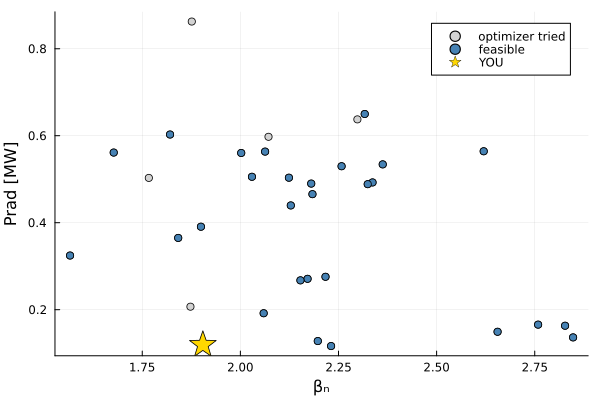
"/Users/tims/d3dsummerschool/runs/audience_challenge.png"More data more better — the same CMOOP at scale
The exact same study, run overnight on a server with a sysimage (population 200 × 20 generations, 10 workers): ~7,800 evaluations instead of our 40. More data more better :)
folder_big = joinpath(@__DIR__, "..", "runs", "d3d_cmoop_big")
df_big = CSV.read(joinpath(folder_big, "extract.csv"), DataFrame)
ok_big = df_big.status .== "success"
for c in constraints
global ok_big .&= coalesce.(df_big[!, c] .== 0.0, false)
end
feas_big = df_big[ok_big, :]
println("server run: ", nrow(df_big), " cases, ", nrow(feas_big), " feasible (laptop: ", nrow(df), " / ", nrow(feasible), ")")
sol_big = [[-row.βn, row.Prad_tot] for row in eachrow(feas_big)]
front_big = sort(feas_big[FUSE.pareto_front(sol_big), :], :βn)
p = scatter(feas_big.βn, -feas_big.Prad_tot; color=:lightgray, ms=2, malpha=0.4,
label="server: $(nrow(feas_big)) feasible", xlabel="βₙ", ylabel="Prad [MW]")
plot!(p, front_big.βn, -front_big.Prad_tot; marker=:circle, lw=2, color=:crimson,
label="server Pareto front")
plot!(p, front.βn, -front.Prad_tot; marker=:diamond, lw=2, color=:royalblue,
label="laptop Pareto front")
scatter!(p, [βn_you], [prad_you]; marker=:star5, markersize=14,
color=troyon_you < 1 ? :gold : :red, label="YOU")
display(p)
savefig(p, joinpath(figdir, "pareto_laptop_vs_server.png"))
server run: 7855 cases, 4274 feasible (laptop: 40 / 28)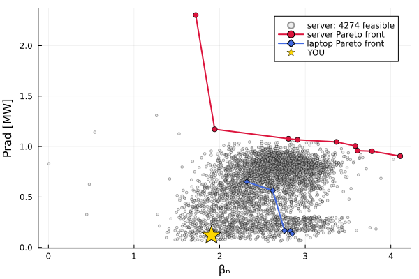
"/Users/tims/d3dsummerschool/runs/d3d_cmoop_summerschool/figures/pareto_laptop_vs_server.png"# the genes of the big run (extracted from the per-case inis in its database):
genes = CSV.read(joinpath(folder_big, "genes_big.csv"), DataFrame)
big = leftjoin(feas_big, genes; on=:gparent)
p = plot(; xlabel="βₙ", ylabel="Prad [MW]")
for (species, color) in (("C", :royalblue), ("Ne", :darkorange))
sel = coalesce.(big.impurity .== species, false)
scatter!(p, big.βn[sel], -big.Prad_tot[sel]; color, ms=3, malpha=0.6, label="impurity: $species")
end
display(p)
savefig(p, joinpath(figdir, "objective_space_by_impurity_big.png"))
p = scatter(big.βn, -big.Prad_tot; zcolor=big.ec_rho0, clims=(0.1, 0.8), ms=3,
colorbar_title="EC deposition ρ₀", xlabel="βₙ", ylabel="Prad [MW]", label="")
display(p)
savefig(p, joinpath(figdir, "objective_space_by_ec_rho0_big.png"))
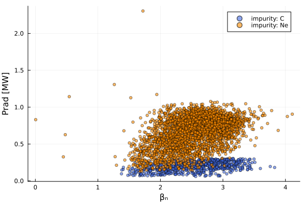
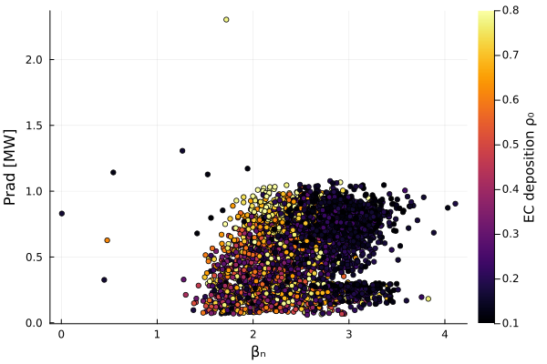
"/Users/tims/d3dsummerschool/runs/d3d_cmoop_summerschool/figures/objective_space_by_ec_rho0_big.png"# all the actuator views, now on the full dataset
for (knob, cl) in knob_ranges
if String(knob) in names(feas_big)
local p = scatter(feas_big.βn, -feas_big.Prad_tot;
zcolor=feas_big[!, knob], clims=cl, ms=3, colorbar_title=string(knob),
xlabel="βₙ", ylabel="Prad [MW]", label="")
display(p)
savefig(p, joinpath(figdir, "objective_space_by_$(knob)_big.png"))
end
end
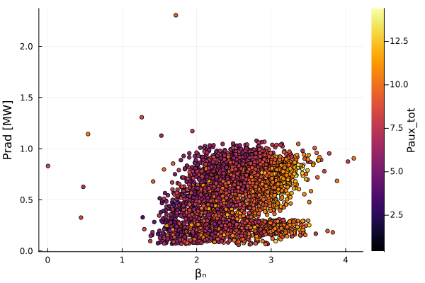
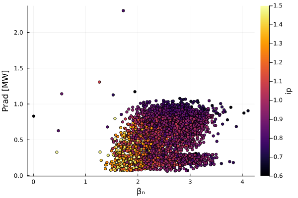
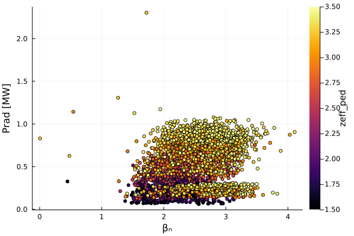
The new age: physics models as public web APIs
EPED-NN (the same pedestal model the CMOOP used through ActorPedestal) is served as a public API at https://iter.fuseexplorer.com/EPED — no FUSE installation, no Julia, no GA account. Just HTTP.
Browse it: https://iter.fuseexplorer.com/EPED (interactive explorer) Self-docs: curl -s https://iter.fuseexplorer.com/EPED/api
Run with: julia –project=../FUSE (only needs JSON + Plots + curl)
import JSON
using Plots
The API documents itself
api_docs = JSON.parse(read(`curl -s https://iter.fuseexplorer.com/EPED/api`, String))
println(api_docs["description"], "\n")
for (name, spec) in api_docs["inputs"]
println(rpad(name, 14), rpad(spec["unit"], 10), rpad(join(spec["range"], " … "), 14), spec["description"])
end
EPED-NN surrogate: predicts the H-mode pedestal height (total pressure) for a tokamak operating point, with an ensemble (5-network) uncertainty.
a m 0.5 … 2.0 minor radius
betan - 0.5 … 4 normalized beta, betaN
bt T 2 … 8 vacuum toroidal magnetic field
delta - 0.1 … 0.65 triangularity (delta95)
ip MA 8 … 15 plasma current
kappa - 1.2 … 2.5 elongation (kappa95)
m amu 1 … 2.5 main ion mass (2.0=D, 2.5=DT)
neped 1e19 m^-3 1 … 20 pedestal-top electron density
nesep_ratio - 0.05 … 0.6 separatrix-to-pedestal density ratio, ne_sep/ne_ped
r m 1.5 … 7 major radius
tesep eV 70 … 200 separatrix electron temperature
zeffped - 0.8 … 4 effective charge at the pedestal, ZeffOne prediction = one POST
function eped_predict(; kw...)
payload = JSON.json(Dict(kw...))
return JSON.parse(read(`curl -s https://iter.fuseexplorer.com/EPED/predict -H "Content-Type: application/json" -d $payload`, String))
end
# a DIII-D-like point:
d3d = (a=0.56, betan=2.0, bt=2.0, delta=0.5, ip=1.0, kappa=1.8, m=2.0,
neped=5.0, nesep_ratio=0.25, r=1.67, tesep=75.0, zeffped=2.0)
println(eped_predict(; d3d...))
# an ITER-like point:
iter = (a=2.0, betan=2.0, bt=5.3, delta=0.49, ip=15.0, kappa=1.85, m=2.5,
neped=7.0, nesep_ratio=0.25, r=6.2, tesep=75.0, zeffped=1.5)
println(eped_predict(; iter...))
JSON.Object{String, Any}("pedestal_height_kPa" => 13.71, "uncertainty_kPa" => 0.15, "diamagnetic_model" => "H")
JSON.Object{String, Any}("pedestal_height_kPa" => 78.02, "uncertainty_kPa" => 0.52, "diamagnetic_model" => "H")Parameter scans against a live model
This is the point: a scan that used to require an account on a cluster and a batch queue is now a for-loop over HTTP.
nepeds = 2.0:0.5:12.0
results = [eped_predict(; iter..., neped) for neped in nepeds]
height = [r["pedestal_height_kPa"] for r in results]
σ = [r["uncertainty_kPa"] for r in results]
display(plot(nepeds, height; ribbon=2σ, fillalpha=0.2, lw=2, label="EPED-NN ±2σ",
xlabel="ne_ped [10¹⁹ m⁻³]", ylabel="pedestal height [kPa]",
title="ITER pedestal height vs density — via public API"))
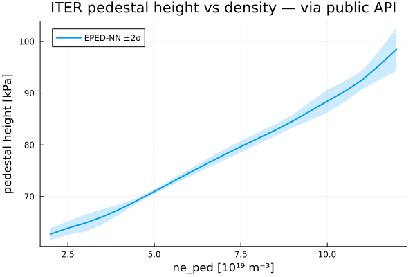
Trust, but verify: uncertainty grows out of distribution
The docs give the training range for each input. Walk βₙ beyond it and watch the ensemble spread — the model tells you when to stop trusting it:
betans = 0.5:0.25:5.0
results = [eped_predict(; iter..., betan) for betan in betans]
height = [r["pedestal_height_kPa"] for r in results]
σ = [r["uncertainty_kPa"] for r in results]
p = plot(betans, height; ribbon=2σ, fillalpha=0.2, lw=2, label="EPED-NN ±2σ",
xlabel="βₙ", ylabel="pedestal height [kPa]")
vspan!(p, [4.0, 5.0]; alpha=0.15, color=:red, label="outside training range")
display(p)
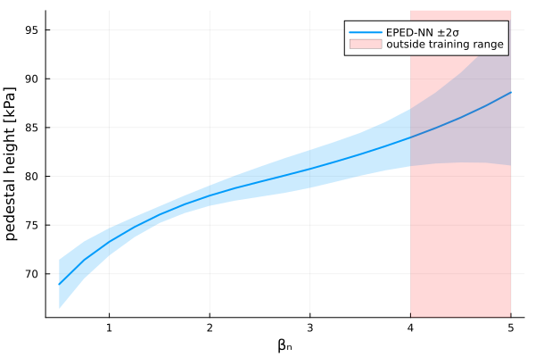
ip = 1.1E6 # plasma current [A] range: [0.6E6, 1.5E6]
Pnbi_co = 2.0E6 # co-current beam [W] range: [0.1E6, 3.3E6]
Pnbi_ctr = 0.5E6 # counter-current beam [W] range: [0.1E6, 3.3E6]
Pnbi_off = 1.0E6 # off-axis beam [W] range: [0.1E6, 3.3E6]
Pec = 3.0E6 # gyrotron power [W] range: [0.1E6, 4.5E6]
ec_rho0 = 0.3 # EC deposition location ρ range: [0.1, 0.8]
ne_ped = 4.0e19 # pedestal density [m⁻³] range: [3.5e19, 4.5e19]
zeff = 2.0 # effective charge range: [1.5, 3.5]
impurity = :C # seeding impurity choices: :C or :Ne
# (warning: dumping ALL the power into a low-current plasma is a good way
# to disrupt — see note below)
# Remember we are maximizing beta_normal and Prad
:C